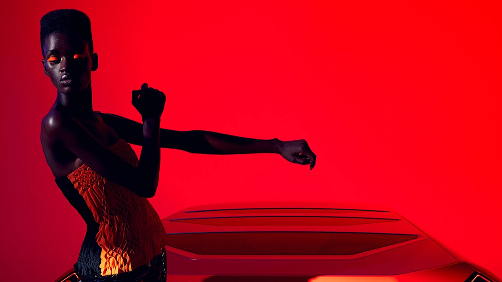
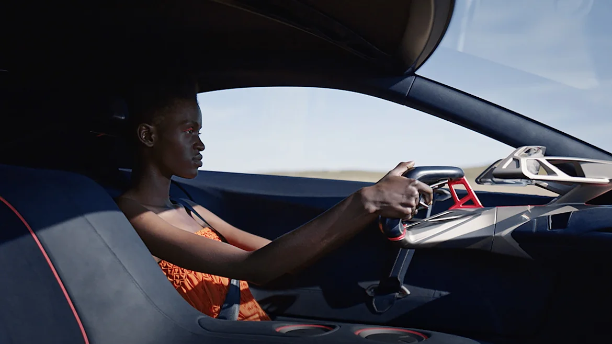

THE BMW VISION M NEXT SYMBOLIZES THE FUTURE.
THE BMW VISION M NEXT SYMBOLIZES THE FUTURE.
Tuyên bố đến từ thương hiệu: BMW Vision M NEXT là sản phẩm mang đến cái nhìn mới nhất về tương lai điện khí hóa của thương hiệu BMW M. Không giống như chiếc BMW Vision iNEXT cho thấy việc lái xe tự động sẽ thay đổi cuộc sống trên xe như thế nào, chiếc BMW Vision M NEXT đang chứng tỏ trí thông minh nhân tạo có thể giúp trải nghiệm lái xe tự hành trở nên rõ ràng và cảm xúc hơn.
Ngoại thất có thiết kế tương tự một chiếc xe thể thao trong khi thiết kế nội thất lấy người lái làm trung tâm. Ở bài viết dưới đây, chúng ta cùng tìm hiểu chiếc BMW Vision M NEXT mang đến trải nghiệm nào mới cho niềm vui lái xe thể thao.
TƯƠNG LAI LÀ ĐIỀU BẤT NGỜ
Những nét nổi bật của BMW Vision M NEXT.
SỨC MẠNH CỦA SỰ HẤP DẪN.
Thiết kế của BMW Vision M NEXT.
“Trong chiếc BMW VISION M NEXT này, các công nghệ thông minh hỗ trợ người lái và màn hình hiển thị nội dung chính xác đến từng thời điểm. Các thông tin vận hành sẽ được hiển thị trong tầm quan sát của người lái một cách rõ ràng và trực quan.”
Domagoj Dukec, Giám đốc thiết kế BMW.
THÔNG ĐIỆP GỬI ĐẾN NGƯỜI LÁI.
Cảm giác lái phấn khích đến từ chiếc xe của tương lai.
THIẾT KẾ NGOẠI THẤT
Ở phía trước, các cánh lướt gió màu cam kéo dài từ hai bên về phía trung tâm xe, kết hợp với khe hút gió hình lưỡi dao bên dưới lưới tản nhiệt hình quả thận, tạo nên nét đẹp đậm chất thể thao. Nhìn từ bên cạnh, dáng xe thể thao hình nêm thấp, các đường cắt tăng dần về phía sau, có phần cắt màu cam tách biệt tạo ấn tượng rằng chiếc BMW Vision M NEXT đang lao về phía trước ngay cả khi đứng yên. Phần đuôi xe được thiết kế đặc biệt nhấn mạnh vào chiều rộng thân xe tạo ấn tượng thị giác. Phần ống xả được làm từ sợi carbon tái chế, thiết kế tập trung vào tính khí động học của xe.
BOOST+.
Hệ dẫn động Power - PHEV của BMW Vision M NEXT cho phép người lái chọn lựa giữa bốn dánh dẫn động điện và dẫn động thuần cầu sau hoằng toàn bằng điện hoặc động cơ xăng tăng áp 4 xylanh. Công suất đầu ra là 441 kW (600 hp) cho phép tốc độ tối đa lên đến 300 km/h và thời gian tăng tốc từ 0-100km/h chỉ trong 3s. Phạm vi hoạt động khi chạy thuần điền có thể lên tới 100km, phạm vi hoạt động thuần điện này có thể đáp ứng nhu cầu sử dụng của người dùng trong hầu hết các trường hợp. Do đó, BMW Vision M NEXT cũng là một chiếc xe thể thao hướng tới tương lai dành cho các khu vực nội thành và những khu vực có yêu cầu không phát thải trong tương lai.
ĐẮM CHÌM TRONG CẢM XÚC CÁ NHÂN.
Để đảm bảo tăng độ tập trung của người lái khi tốc độ xe ngày càng tăng, thông tin hiển thị trên chiếc BMW Vision M NEXT sẽ điều chỉnh theo logic lấy nét của tốc độ: nếu xe đứng yên, màn hình sẽ hiển thị trên vô lăng. Khi khởi hành, màn hình cong sẽ hiển thị thông tin. Nếu trong tình huống lái xe đòi hỏi sự tập trung cao độ của người lái, thông tin sẽ chuyển sang màn hình HUD. Người lái có thể liên lạc với trợ lý cá nhân thông minh BMW.
“ Chúng tôi đã sử dụng những vật liệu tiên tiến để tạo ra nội thất hiện đại và sang trọng. Trong khi đường nét thiết kế đơn giản, gọn gàng thì các chi tiết riêng lẻ vẫn thể hiện được tính cao cấp trong từng phụ kiện.”
Domagoj Dukec, Giám đốc thiết kế BMW.
TÁI ĐỊNH NGHĨA VỀ NIỀM VUI LÁI XE
Chiếc BMW Vision M NEXT là hiện thân của tương lai về định hướng lái xe điển hình của BMW.
BMW Vision M NEXT thể hiện bước tiếp theo về định hướng lái xe điển hình của BMW. Toàn bộ nội thất tập trung vào Màn hình ngay trước người lái. Các chi tiết hình hình học đa dạng được hạn chế một cách thông mình để người lái có thể tập trung hoàn toàn vào trải nghiệm lái xe.
SỨ MỆNH TƯƠNG LAI
Thiết kế của BMW Vision M NEXT là kết quả của một cuộc thi nội bộ. Các nhà thiết kế của BMW cạnh tranh với nhau bằng các bản phác thảo và hình ảnh vẽ tay. Một số vòng thi đã diễn ra để chọn ra những thiết kế tốt nhất cho đến khi có kết quả cuối cùng. Quá trình từ ý tưởng ban đầu đến khi hoàn chỉnh chiếc xe mất khoảng 18 tháng.
“Có thể cuộc thi này sẽ không được thực hiện nếu không có sự theo đuổi chung một mục tiêu của các thành viên. Đây là lý do tại sao tôi rất tự hào về đội ngũ của mình, những người đã làm việc cật lực cho dự án trong vài thánh qua.” Domagoj Dukec, giám đốc thiết kế của BMW cho biết.